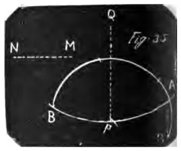
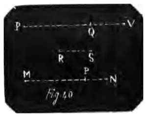
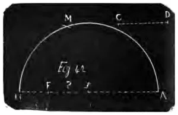

Book V: Proportional Distances¶
Libro Quinto: Delle distanze proporzionali (§§ 86–99)
Compass-only ratio and proportion calculus (§§ 86–99, pp. 46–50, folios 0071–0075): third proportionals (§§ 86–92), the celebrated 4-circle concentric fourth proportional (§§ 93–95), proportional segment division (§ 96), the compass-only Golden Section (§§ 97–98), and the mean proportional (§ 99).

§§ 86–92: Third Proportional & Iterative Doubling
§§ 86–92 (Figs. 35–38, folio 0071–folio 0073, pp. 46–48). Given two segments \(Qp\) and \(MN\), find their third proportional \(x = (MN)^2 / Qp\) using the compass alone.
§§ 93–95: Concentric Fourth Proportional
§ 93. Problem (Fig. 39, folio 0073, p. 48). Given three distances \(a, b, c\), find the fourth proportional \(x = bc / a\) (\(a : b :: c : x\)) by the compass alone.

§ 96: Dividing a Segment in a Given Ratio
§ 96. Problem (Fig. 40, folio 0074, p. 49). Divide a given straight distance \(PQ\) in the same ratio as a divided segment \(MP : PN\).
§§ 97–98: Golden Section by Compass Alone
§ 97. Problem (Fig. 41, folio 0075, p. 50). Divide a given distance \(AB\) in extreme and mean ratio (the Golden Section) using the compass alone.

§ 99: Mean Proportional by Compass Alone
§ 99. Problem (Fig. 42, folio 0075, p. 50). Find the mean proportional \(BM = \sqrt{AB \cdot CD}\) between two given distances \(AB\) and \(CD\).